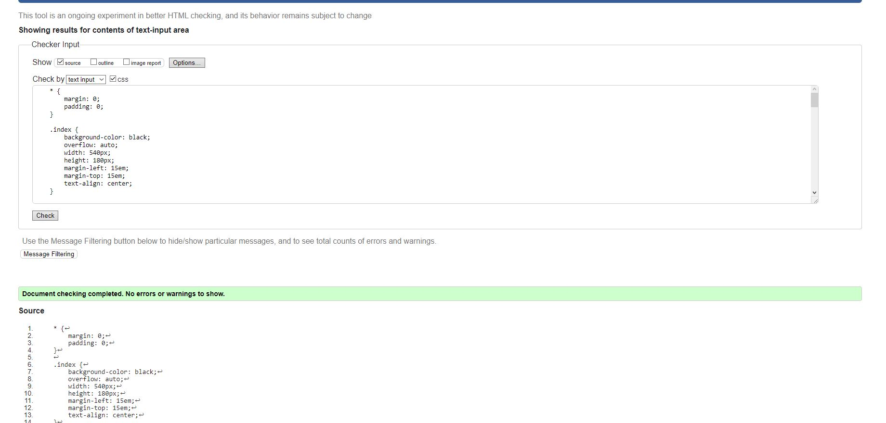
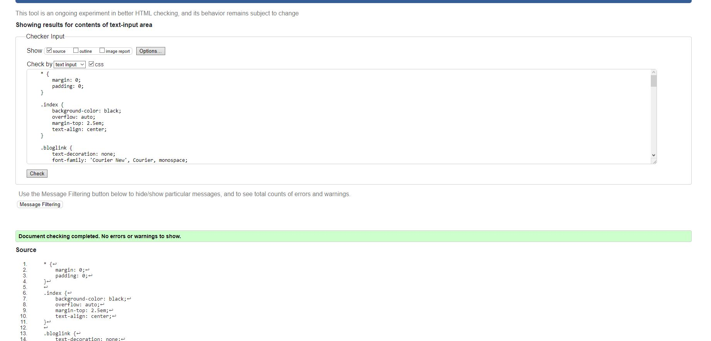
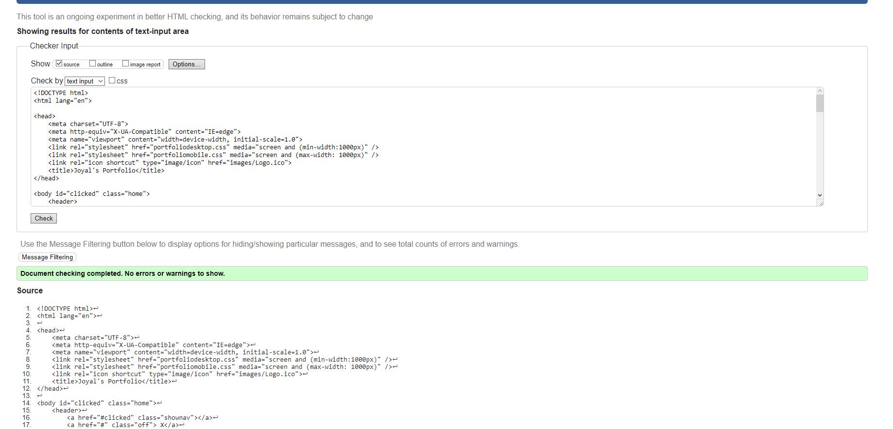
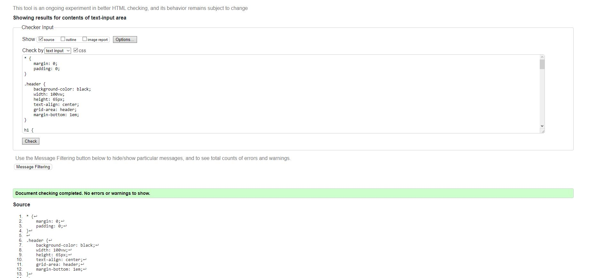
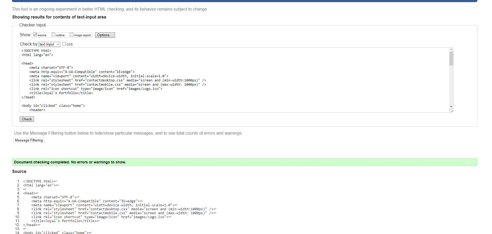
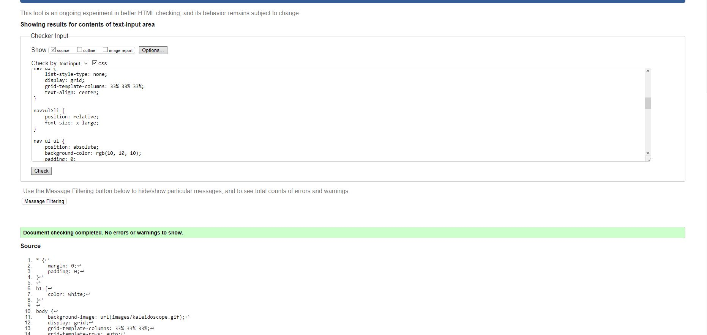
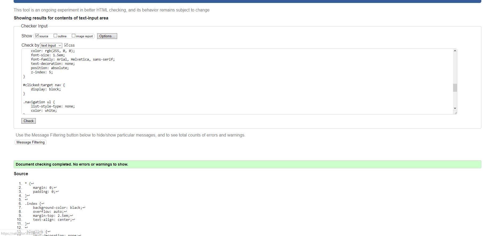
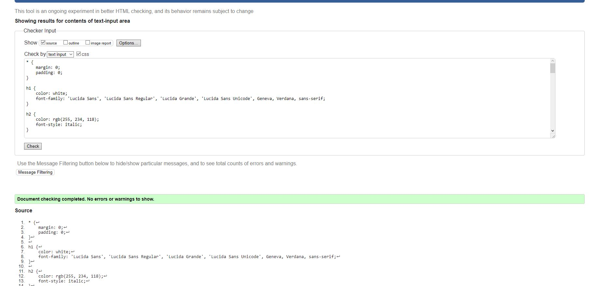
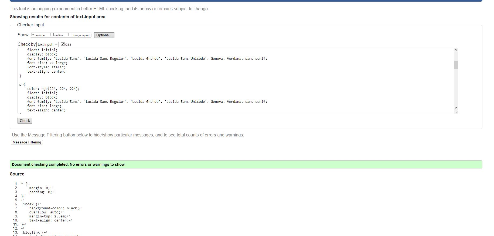

Index
In the index page, I wanted to quickly introduce myself to the webiste visitor and have brief look to who I am and what I do. I found that the background being animated suited the eye more than just a stable picture which is why I decided to go for a dynamic approach to it. The background was taken as a gif which suited the way I wanted the page to look like
Below, you can find the validation for the index page HTML, it's CSS, and its mobile version CSS as well:

HTML validation for the index page
CSS validation for the index page
Mobile version validtion of the index page
Portfolio Page
I wanted to have the portfolio grid as a 4 column grid inorder to properly display the work I made and please the eye because 2 was too less and 3 looked off so I settled with 4 and came out pretty happy with how it looked with 8 projects on there. The labels for them were a matter of postioning them acording to the images and the grid space for the whole project. I linked each label to their respective webpages which give extensive detail for the project and some even present the website I worked on.
Below, you can see the HTML and the CSS validation for both the desktop and the mobile versions of the portfolio page:
HTML validation validation for the portfolio page
The CSS validation for the portfolio page

The mobile validation of the portfolio page
Contact Page
With the contact page, it was just a matter of making a form and postioning it to the center of the screen so it looks eye pleasing and attractive. There was not much more to the content but i t was mainly the CSS that worked on this page, I had the grid on the form be a 2 column grid in order to have the labels on one side with the input text boxes on the other which made it look better than the labels being on top.
Below is the CSS, HTML and mobile code validations on w3c validator:
The HTML validation of the contact page
The CSS validationfor the contact page
The mobile validation for the contact page
Blog Page
To start off the blog page, I took inspiration from slack.com's blog page as the columns are the same along with the way the content is structured. I decided that the blog posts would each go into seperate columns and the content underneath it all.
Below, you can find the validation for the HTML,CSS and the mobile version of the blog page:

The HTML validation for the blog page
The CSS validation for the blog page
The validation for the mobile version of the blog